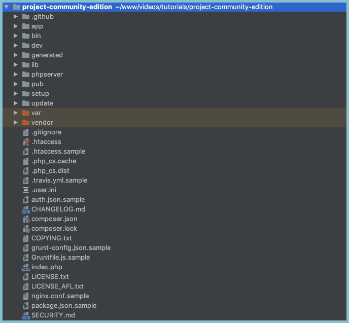
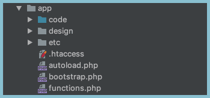
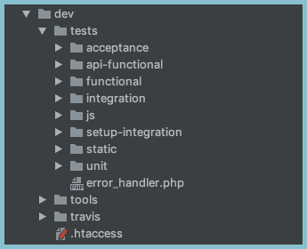
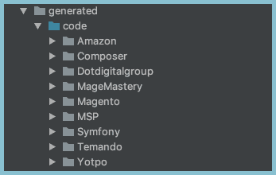
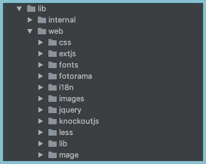
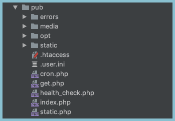
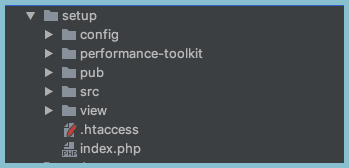
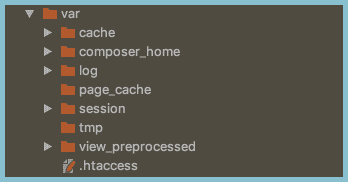

Оригинал
Project Structure Overview
Обзор структуры проекта
Directory structure of any framework can be challenging to jump on and understand. Magento 2 Open Source is not an exception here and it is important to understand project structure before doing any development.
Структура каталогов любого фреймворка может быть сложной для понимания. Magento 2 с открытым исходным кодом здесь не исключение, и важно понимать структуру проекта, прежде чем приступать к разработке.
In this lesson we will learn Magento 2 Open Source project structure. It will help you to know files and directories, where to look at every time you work with Magento 2 Open Source project.
В этом уроке мы изучим структуру проекта Magento 2 с открытым исходным кодом. Это поможет вам узнать файлы и каталоги, куда смотреть каждый раз, когда вы работаете с проектом Magento 2 с открытым исходным кодом.
Overview
Обзор
Let's have a look at the Magento 2 Open Source project structure.
Давайте посмотрим на структуру проекта Magento 2 с открытым исходным кодом.

First of all, we have to understand that this is a list of files and directories come when you install Magento 2 Open Source application. Not all files are required for development. Moreover, not all files are required to run Magento 2 Open Source application.
Прежде всего, мы должны понимать, что это список файлов и каталогов, который появляется при установке приложения Magento 2 с открытым исходным кодом. Не все файлы необходимы для разработки. Более того, не все файлы требуются для запуска приложения Magento 2 с открытым исходным кодом.
There are files you might never open during your development journey. Other files are necessary to change and modify quote frequently.
Есть файлы, которые вы, возможно, никогда не откроете во время разработки. Другие файлы необходимы для частого изменения и модификации цитаты.
In this lesson, we will cover all Magento 2 Open Source project files which are on the top level of the project structure. However, there are thousands of files and PHP classes which will not be covered in this lesson. During the Mage Mastery education journey and next Magento 2 for Beginners lessons we are going to cover different classes and functionality related to different Magento 2 Open Source modules.
В этом уроке мы рассмотрим все файлы проекта Magento 2 с открытым исходным кодом, которые находятся на верхнем уровне структуры проекта. Однако существуют тысячи файлов и классов PHP, которые не будут рассматриваться в этом уроке. Во время образовательного путешествия по Mage Mastery и следующих уроков Magento 2 для начинающих мы собираемся охватить различные классы и функции, связанные с различными модулями Magento 2 с открытым исходным кодом.
Application Entry Point
Точка входа в приложение
The number one file we have to start is index.phpfile. This is an entry point of your application. Every time Magento 2 Open Source application receives an incoming HTTP request it is processed by the index.phpfile. Depending on your server document root configuration, you may also configure a similar index.phpfile located in the pub/directory.
Файл номер один, который мы должны запустить, - это index.phpfile. Это точка входа в ваше приложение. Каждый раз, когда приложение с открытым исходным кодом Magento 2 получает входящий HTTP-запрос, он обрабатывается файлом index.phpfile. В зависимости от конфигурации корневого документа вашего сервера вы также можете настроить аналогичный файл index.php, расположенный в каталоге pub /.
For security reasons it is recommended to configure the document root of a Magento 2 Open Source application to point to the pub/directory.
По соображениям безопасности рекомендуется настроить корень документа приложения с открытым исходным кодом Magento 2 так, чтобы он указывал на каталог pub /.
All your debugging activities should start with the index.phpfile. From this file, you can go deeper into the application execution process in order to find out how Magento 2 Open Source works and what part of the application processes a HTTP request.
Все ваши действия по отладке должны начинаться с файла index.php. Из этого файла вы можете глубже изучить процесс выполнения приложения, чтобы узнать, как работает Magento 2 с открытым исходным кодом и какая часть приложения обрабатывает HTTP-запрос.
The app directory
Каталог приложения
The appdirectory is responsible for storing all configuration files, any themes installed in a Magento 2 Open Source application.
Каталог приложений отвечает за хранение всех файлов конфигурации, любых тем, установленных в приложении с открытым исходным кодом Magento 2.

Theme files include PHTML, HTML, CSS, LESS, JavaScript and images. Also, inside the appdirectory you can find source code files. There are currently no files in the codedirectory as of an empty Magento 2 Open Source installation. Usually, all additional customizations happen inside the app/code directory.
Файлы тем включают PHTML, HTML, CSS, LESS, JavaScript и изображения. Кроме того, в каталоге приложений вы можете найти файлы с исходным кодом. В настоящее время в каталоге кодов нет файлов после пустой установки Magento 2 с открытым исходным кодом. Обычно все дополнительные настройки происходят внутри каталога app/code.
The app/etc directory holds all default configuration settings for a Magento 2 Open Source application. Upon the application installation the env.php file. This is a primary file where you can find database connection settings, cache related settings and other settings which are going to be covered in the next lessons.
Каталог app/etc содержит все настройки конфигурации по умолчанию для приложения Magento 2 с открытым исходным кодом. При установке приложения файл env.php. Это основной файл, в котором вы можете найти настройки подключения к базе данных, настройки, связанные с кешем, и другие настройки, которые будут рассмотрены в следующих уроках.
Magento 2 platform uses XML files for storing configuring settings and dependency injection (Service Container) configuration. The di.xml file located in the app/etc directory is a good example of dependency injection configuration. We are going to discuss different types of XML files in order to provide configuration settings used to create or customize functionality.
Платформа Magento 2 использует файлы XML для хранения настроек конфигурации и конфигурации внедрения зависимостей (Service Container). Файл di.xml, расположенный в каталоге app/etc, является хорошим примером конфигурации внедрения зависимостей. Мы собираемся обсудить различные типы файлов XML, чтобы предоставить параметры конфигурации, используемые для создания или настройки функций.
The config.phpfile which provides all available Magento 2 modules which are available for a Magento 2 Open Source application. Each module has a active/disabled status allowing Magento 2 Open Source to include a module's functionality.
Файл config.php, который предоставляет все доступные модули Magento 2, которые доступны для приложения Magento 2 с открытым исходным кодом. Каждый модуль имеет статус активен / отключен, что позволяет Magento 2 с открытым исходным кодом включать функциональность модуля.
The bin directory
Каталог bin
The bin directory provides a Magento CLI (Command Line Interface) tool. It provides an interface via CLI to different Magento 2 commands to perform changes in Magento 2 application. An example of such command can be a cache clean or compilation.
Папка Bin предоставляет инструмент Magento CLI (интерфейс командной строки). Он предоставляет интерфейс через CLI для различных команд Magento 2 для внесения изменений в приложение Magento 2. Примером такой команды может быть очистка кеша или компиляция.
The dev directory
Каталог разработчиков
The dev directory holds all tests which come together with Magento 2 Open Source.
Каталог dev содержит все тесты, которые идут вместе с Magento 2 с открытым исходным кодом.
Magento 2 includes 8 different types of tests inside dev/tests directory. Each of the directory includes tests of a particular type and additional code which helps to execute tests.
Magento 2 включает 8 различных типов тестов внутри каталога dev/tests. Каждый каталог включает тесты определенного типа и дополнительный код, который помогает выполнять тесты.

The dev/tools directory provides different tools and its configuration such as Grunt and other non-commonly used files.
Каталог dev/tools предоставляет различные инструменты и их конфигурацию, такие как Grunt и другие редко используемые файлы.
The generated directory
Сгенерированный каталог
This directory holds all auto-generated PHP classes. Magento 2 relies on PHP code generation.
Этот каталог содержит все автоматически сгенерированные классы PHP. Magento 2 полагается на генерацию кода PHP.

From time to time, we are going to look into the generateddirectory in order to understand logic which is used to perform a certain operation.
Время от времени мы будем заглядывать в сгенерированный каталог, чтобы понять логику, которая используется для выполнения определенной операции.
The lib directory
Каталог lib
The directory includes internal and web directories.
Каталог включает каталоги internal и web.

The internal directory is not something we are going to work with. And the web directory provides frontend or web related files. It includes JavaScript 3rd-party libraries such as jQuery, KnockoutJS, RequireJS and other libraries. Also the webincludes CSS/LESS files as well as UI documentation.
каталог internal - это не то, с чем мы будем работать. А каталог web содержит файлы, относящиеся к веб-интерфейсу или сети. Он включает сторонние библиотеки JavaScript, такие как jQuery, KnockoutJS, RequireJS и другие библиотеки. Также в Интернете есть файлы CSS / LESS и документация по пользовательскому интерфейсу.
The phpserver directory
Каталог phpserver
It provides a simple PHP server which can be used for development. It is not recommended to use the router.phpas part of Magento 2 Open Source production configuration.
Он предоставляет простой сервер PHP, который можно использовать для разработки. Не рекомендуется использовать router.php как часть производственной конфигурации Magento 2 с открытым исходным кодом.
The pub directory
Каталог pub
Next directory which comes with Magento 2 Open Source is a pubdirectory.
Следующий каталог, который поставляется с Magento 2 с открытым исходным кодом, - это каталог pub.

This is a server root directory of a Magento 2 application. The index.php is a primary file responsible for processing HTTP requests. There is static.php file which responsible for processing all JavaScript, CSS and HTML files and finding the files in the pub/static directory.
Это корневой каталог сервера приложения Magento 2. Index.php - это основной файл, отвечающий за обработку HTTP-запросов. Существует файл static.php, который отвечает за обработку всех файлов JavaScript, CSS и HTML и поиск файлов в каталоге pub/static.
All media content which is going to be uploaded whether via Magento Admin or some programmatically is stored in the pub/media directory. Every time you would have to check the result of Import execution or want to look up a media file you have to check this directory.
Весь медиа-контент, который будет загружен через Magento Admin или каким-либо программным способом, хранится в каталоге pub/media. Каждый раз, когда вам нужно будет проверить результат выполнения импорта или найти мультимедийный файл, вы должны проверять этот каталог.
The setup directory
Каталог установки
This directory is used to provide a Web Setup Wizard and other setup related scripts.
Этот каталог используется для предоставления мастера веб-настройки и других сценариев, связанных с настройкой.

It is a second way on how you can install Magento 2 Open Source in addition to command line installation which we have performed in a previous lesson. Usually, this is not a directory we are going to work with.
Это второй способ установки Magento 2 с открытым исходным кодом в дополнение к установке из командной строки, которую мы выполнили на предыдущем уроке. Обычно это не тот каталог, с которым мы собираемся работать.
The var directory
Каталог var
You can find cache of Magento 2 application and session directory. In case your configuration says that all sessions have to be stored in a filesystem, the var/session directory will hold all user session files.
Вы можете найти кеш приложения Magento 2 и каталог сеансов. Если ваша конфигурация говорит, что все сеансы должны храниться в файловой системе, каталог var/session будет содержать все файлы пользовательских сеансов.

Also, the var/log directory where all errors, PHP exceptions will be created and stored.
Также каталог var/log, в котором будут создаваться и сохраняться все ошибки и исключения PHP.
The vendor directory
Каталог поставщиков
This directory includes all 3rd-party dependencies installed. It also include Magento 2 source files under the vendor/magento directory. We are going to look into the directory quite often during development.
Этот каталог включает в себя все установленные сторонние зависимости. Он также включает исходные файлы Magento 2 в каталоге vendor/magento. Мы будем часто заглядывать в каталог во время разработки.
Other files
Другие файлы
Magento 2 Open Source provides different sample configuration files for Apache server and Nginx. For example files grunt-config.json.sample, Gruntfile.js.sample and packages.jsonare responsible for installing frontend/JavaScript dependencies.
Magento 2 с открытым исходным кодом предоставляет различные образцы файлов конфигурации для сервера Apache и Nginx. Например, файлы grunt-config.json.sample, Gruntfile.js.sample и packages.json отвечают за установку зависимостей frontend/JavaScript.
The last one is the composer.json file. It provides all dependencies in Magento 2 application. Whether we want to install additional Magento 2 module or test the application. During development, this file is going to be used frequently.
Последний файл - composer.json. Он предоставляет все зависимости в приложении Magento 2. Хотим ли мы установить дополнительный модуль Magento 2 или протестировать приложение. Во время разработки этот файл будет часто использоваться.
Final note
Заключительное примечание
This is what I wanted to show you in this lesson. We are going to work and learn more about each project directory and file during Mage Mastery lessons.
Это то, что я хотел показать вам на этом уроке. Мы собираемся работать и узнавать больше о каждом каталоге и файле проекта во время уроков Mage Mastery.
PREV
NEXT